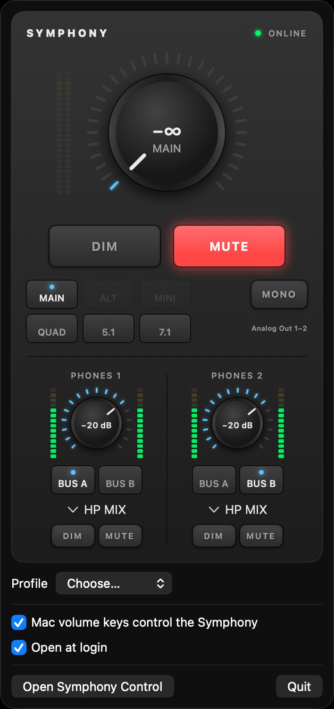
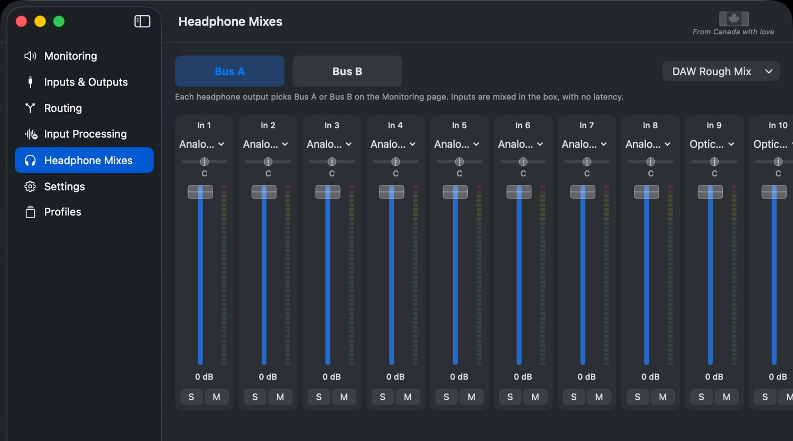
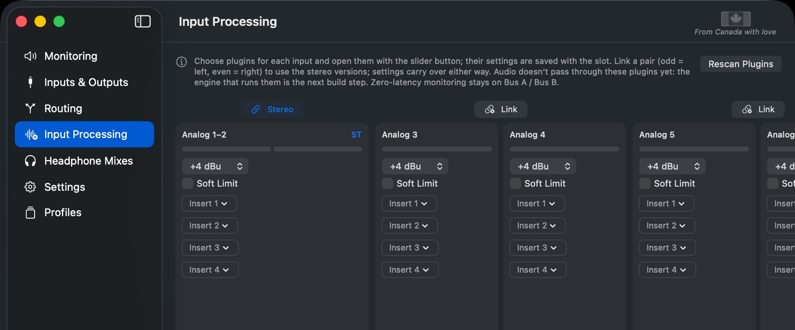
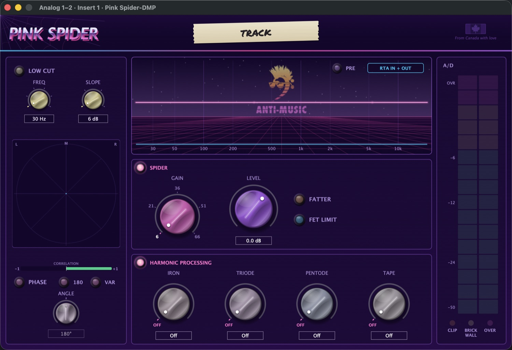
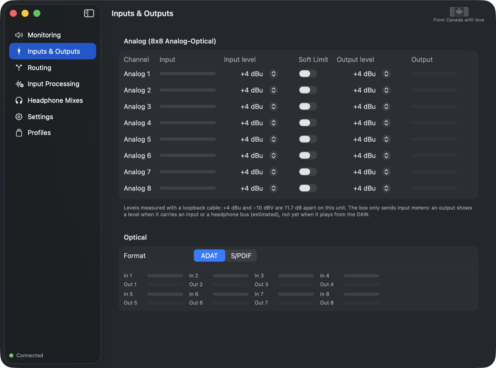
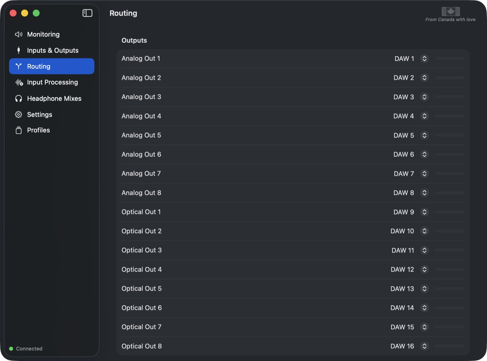
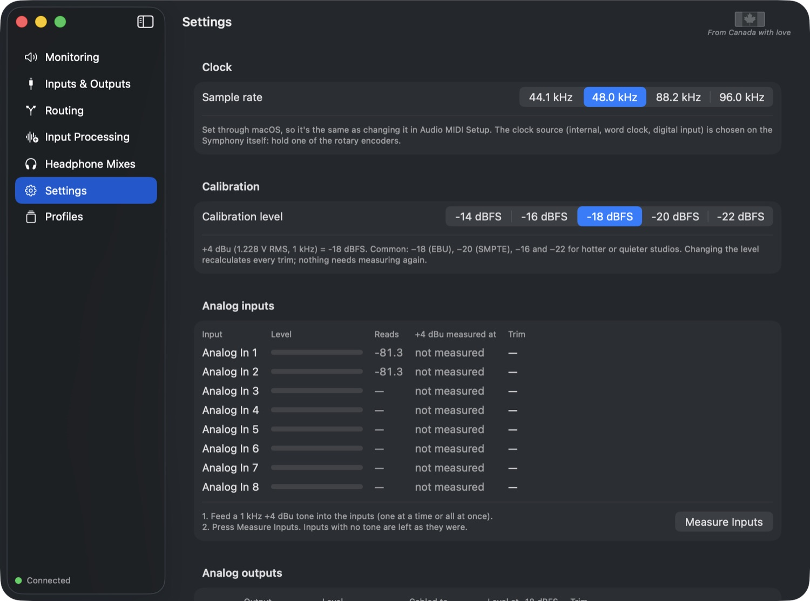
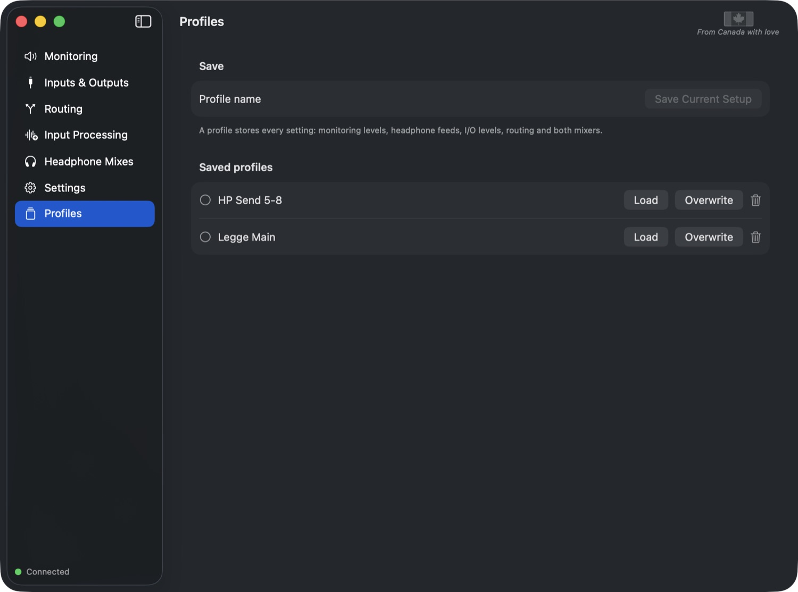

Anti-Music · User manual · Version 0.3
Your Apogee Symphony I/O Mk1, working again on modern macOS, with Symphony Control: monitoring, headphone mixes, routing, calibration and input processing.

Getting started
Apogee's software no longer runs on macOS Tahoe, so the Symphony sits with a "!" on its front panel. Anti-Symphony tells the box the Mac is ready, makes it a normal audio device again, and replaces Maestro.
An Apogee Symphony I/O Mk1 on USB, a Mac with macOS 14 (Sonoma) or later (tested on macOS 26 Tahoe, Apple silicon), and an internet connection. No admin password, no kernel extension.
curl -fsSL https://raw.githubusercontent.com/BigDumbRobot/Anti-Symphony/main/install.sh | bash
Why does it build on my Mac? Building it yourself means macOS treats it as your own software, so there are no "unidentified developer" warnings and nothing to approve in System Settings.
On the GitHub page, click the green Code button → Download ZIP. Unzip it and double-click Install Anti-Symphony.command. The first time, macOS may say it can't verify the file: right-click it, choose Open, then Open again.
| Part | What it does | Where |
|---|---|---|
| Symphony Control | The control app, plus the monitor panel in the menu bar. | ~/Applications |
| symphonyd | Small background service: wakes the box, keeps settings, restores them if the box forgets. Starts at login. | ~/Library/Application Support/Anti-Symphony |
Update: run the same install line again. Your settings and profiles stay.
Remove: run the line with | bash -s -- --uninstall at the end instead of | bash. Profiles and settings are kept unless you delete the Anti-Symphony folder in Application Support.
Symphony Control
A monitor controller on screen: one big knob, big DIM and MUTE, speaker sets and both headphone outputs. The same panel lives in the menu bar, so you rarely need the full window.
The menu bar panel: click the speaker icon in the menu bar.
On the Monitoring page, choose the Monitor source (usually DAW 1–2) and assign Speakers A–D to any output pairs. The active pair plays the source; the others are silent. The knob, DIM and MUTE reach every analog pair you assign, so don't use those outputs for line sends. Optical pairs switch but have no level control.
3Symphony Control
Two separate stereo cue mixes, Bus A and Bus B, mixed inside the Symphony. Inputs reach the headphones with zero latency, because they never go through the Mac.

Bus A selected. Each strip: source, pan, fader, meter, solo and mute.
Artists usually want the track too. DAW Rough Mix (top right) puts a DAW output pair on faders 15 and 16, panned left and right. Send your session's rough mix to that pair in the DAW, and the artist hears it alongside their zero-latency inputs.
Input meters are measured by the box. The bus output meter is worked out from the mixer settings and input levels. DAW channels aren't metered yet.
Symphony Control
Plugin inserts for every input: four slots per channel, for the Audio Unit plugins installed on your Mac.

Analog 1–2 linked as a stereo pair (ST). Each strip shows the input meter, the input's reference level and Soft Limit, then four inserts.
Click Link above two channels to make a stereo pair: odd = left, even = right. The pair switches to each plugin's stereo version (for example "CLA-76 Mono" becomes "CLA-76 Stereo", "(m)" becomes "(s)") and keeps its settings. Unlinking goes back to the mono versions, still with the same settings.

A plugin window opened from a slot (Pink Spider-DMP).
Current version: setup only. Plugins chosen here are saved with their settings, but audio doesn't pass through them yet. The engine that runs them is in development.
The Symphony has no DSP chip, so plugins run on the Mac. Recordings can be lined up with zero added delay. Live monitoring through plugins always has a small delay (a few milliseconds), so keep the artist's cue on Bus A / Bus B for true zero latency.
Symphony Control

Inputs & Outputs.

Routing.
symphonyd saves everything and puts it back if the box forgets its settings (it does when it's power-cycled).
Symphony Control

Clock at the top, calibration below.
Sample rate: 44.1, 48, 88.2 or 96 kHz (the same as Audio MIDI Setup). The clock source is chosen on the Symphony itself: hold one of its rotary encoders.
Choose what +4 dBu (1.228 V RMS) reads in your DAW: −18 dBFS (EBU), −20 (SMPTE), or −14, −16, −22. Changing it later recalculates every trim; nothing needs measuring again.
The app does the rest: it plays the tone, routes it to the output, measures it on the input, and puts your routing back. It uses a DAW channel nothing else is playing, so the tone only reaches the output being measured.
Outputs 1–2 usually feed your speakers, so they start unticked. Turn the speakers down before calibrating them.
The Symphony Mk1 has no fine trim of its own. Trims are applied by Input Processing. If you change a channel's +4 dBu / −10 dBV setting, measure it again: a warning sign shows which ones.
Optical inputs and outputs are digital and need no calibration.
Symphony Control

Profiles.
A profile stores every setting: monitoring, headphone feeds, I/O levels, routing and both headphone mixes. Type a name and click Save Current Setup; Load, Overwrite or delete them later. Quick-load from the menu bar panel.
Every control is available over OSC, and there's a Bitfocus Companion module with ready-made buttons. See docs/osc.md and companion/ on GitHub.
| You see | Try |
|---|---|
| "!" stays on the box | Check the USB cable and power. The app should say Connected at the bottom left. If it says symphonyd offline, run the install line again. |
| No sound in the DAW | Choose the Symphony as the DAW's audio device. On the Routing page, outputs should play DAW channels. |
| No speaker icon in the menu bar | It's probably hidden behind the camera notch (see Monitoring). |
| Settings changed after a power cycle | Wait a few seconds: symphonyd puts them back. |
| The install stopped with an error | Run it again. The lines just above the error say which step failed. Check the Mac runs macOS 14 or later. |
The background service logs to ~/Library/Logs/symphonyd.log. Command-line control: symctl dump (in ~/Library/Application Support/Anti-Symphony). How the box's protocol was worked out, and all the code, are on GitHub.
Anti-Symphony is free and open source, made by Anti-Music in Canada. Questions and bug reports: github.com/BigDumbRobot/Anti-Symphony/issues.